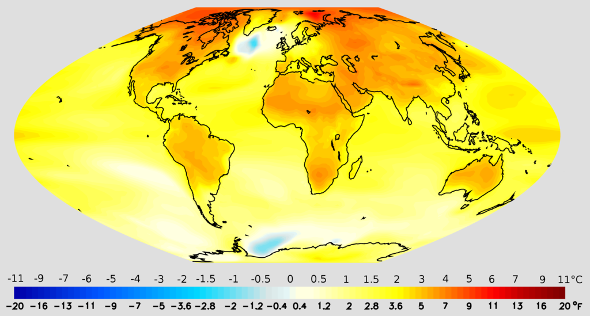

Climate models
Climate models
A climate model is a representation of the physical, chemical and biological processes that affect the climate system.
 Although researchers attempt to include as many processes as possible, simplifications of the actual climate system are inevitable because of the constraints of available computer power and limitations in knowledge of the climate system. Results from models can also vary due to different greenhouse gas inputs and the model's climate sensitivity. For example, the uncertainty in IPCC's 2007 projections is caused by
Although researchers attempt to include as many processes as possible, simplifications of the actual climate system are inevitable because of the constraints of available computer power and limitations in knowledge of the climate system. Results from models can also vary due to different greenhouse gas inputs and the model's climate sensitivity. For example, the uncertainty in IPCC's 2007 projections is caused by
(1) the use of multiple models with differing sensitivity to greenhouse gas concentrations
(2) the use of differing estimates of humanity's future greenhouse gas emissions
(3) any additional emissions from climate feedbacks that were not included in the models IPCC used to prepare its report, i.e., greenhouse gas releases from permafrost.
The models do not assume the climate will warm due to increasing levels of greenhouse gases. Instead the models predict how greenhouse gases will interact with radiative transfer and other physical processes. Warming or cooling is thus a result, not an assumption, of the models.
Clouds and their effects are especially difficult to predict. Improving the models' representation of clouds is therefore an important topic in current research.Another prominent research topic is expanding and improving representations of the carbon cycle.
 Models are also used to help investigate the causes of recent climate change by comparing the observed changes to those that the models project from various natural and human causes. Although these models do not unambiguously attribute the warming that occurred from approximately 1910 to 1945 to either natural variation or human effects, they do indicate that the warming since 1970 is dominated by anthropogenic greenhouse gas emissions.
The physical realism of models is tested by examining their ability to simulate contemporary or past climates. Climate models produce a good match to observations of global temperature changes over the last century, but do not simulate all aspects of climate.Not all effects of global warming are accurately predicted by the climate models used by the IPCC. Observed Arctic shrinkage has been faster than that predicted.Precipitation increased proportionally to atmospheric humidity, and hence significantly faster than global climate models predict.Since 1990, sea level has also risen considerably faster than models predicted it would. The 2017 United States published National Climate Assessment, notes that "climate models may still be underestimating or missing relevant feedback processes".